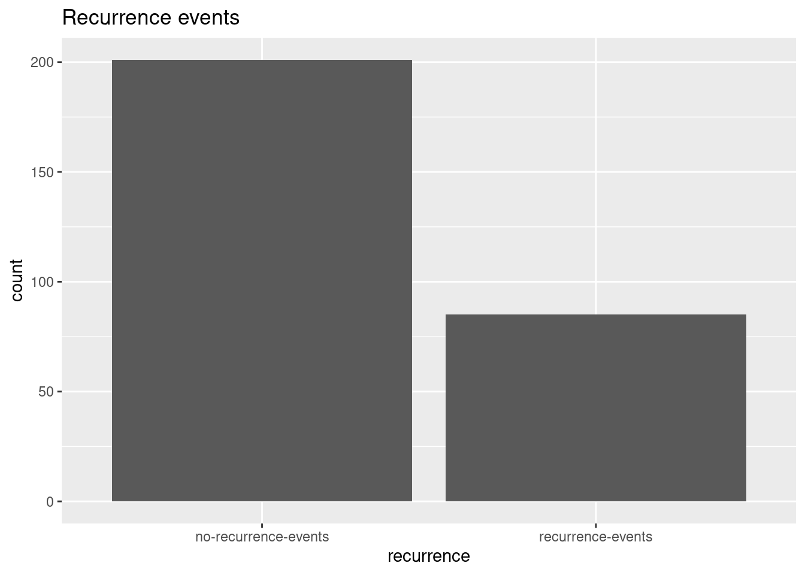
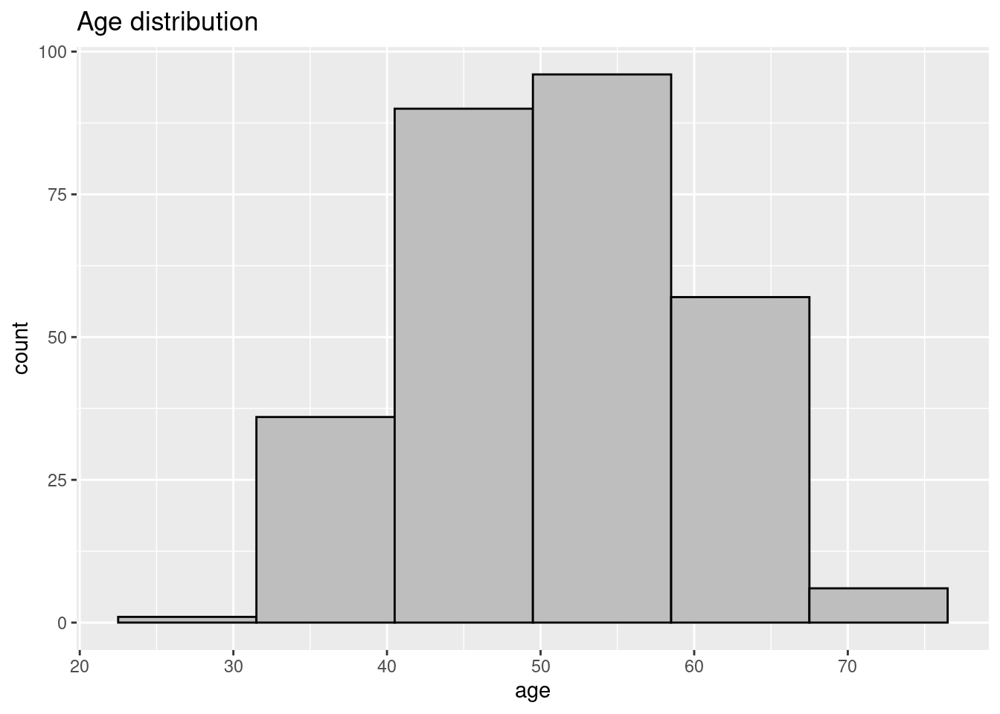
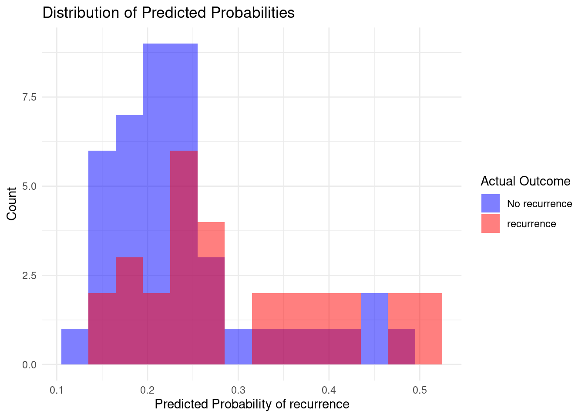
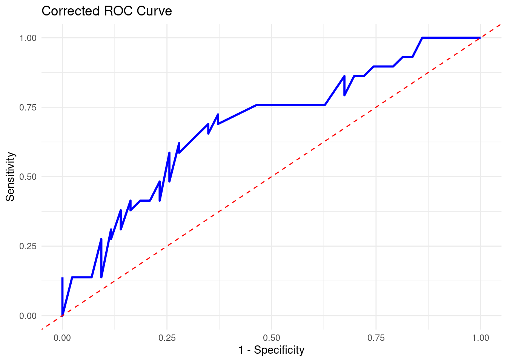
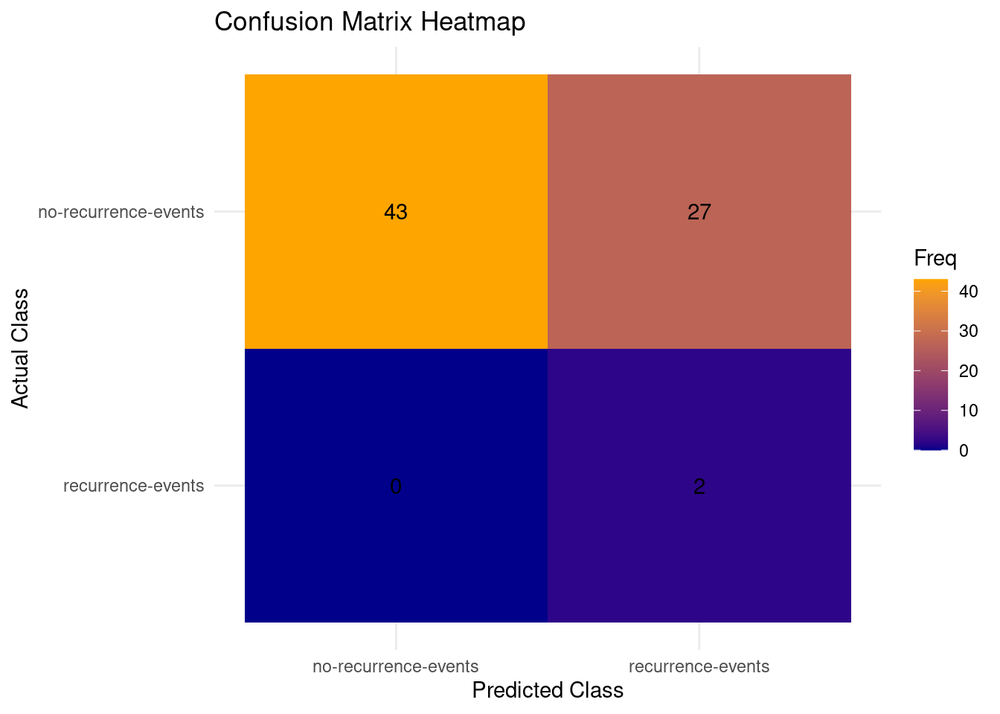

Library
library(here)
library(tidyverse)
library(tidymodels)
library(tibble)
tidymodels_prefer() # prefer to use functions from tidymodels package
library(ggplot2)
library(parsnip)
library(pROC)
library(stringr)Machine learning can be split between supervised learning and unsupervised learning. Supervised learning requires labelled input and unsupervised learning does not require labelled input data. Supervised learning is best used for classification and regression-based models while unsupervised is best for clustering and association rules.
In this project we make use of a Tidymodels regression classification supervised learning model. The breast cancer dataset contains patient data with attributes. With Tidymodels we utilize attributes, such as age, tumor size and degree of malignance to predict recurrence events.
Model fitting:
A simple example of fitting a model would be having the function for a line ‘y = mx + b’ and finding the values for m and b that get the outcome of y, which corresponds with the training data. Basically input data, analyze the input and retrieve the function to recreate the line with different datasets.
Hyperparameter tuning;
Fit 90% of your data and test the remaining 10% test fold. Repeat for each separate fold and pick the best results.
data_raw <- as_tibble(read.csv(here::here("data_raw/data_00100/breast_cancer/breast-cancer.data"), header = FALSE))
data_lines <- grep("\\s+[0-9]+\\.\\s+[A-Za-z-]+:",
readLines(here::here("data_raw/data_00100/breast_cancer/breast-cancer.names")), value = TRUE)
data_names <- sub("\\s+[0-9]+\\.\\s+([A-Za-z-]+):.*", "\\1", data_lines)[1:10]
data_names <- data_names %>% gsub(pattern = "-", replacement = "_")
data_tbl <- stats::setNames(data_raw, data_names)| Class | age | menopause | tumor_size | inv_nodes | node_caps | deg_malig | breast | breast_quad | irradiat |
|---|---|---|---|---|---|---|---|---|---|
| no-recurrence-events | 30-39 | premeno | 30-34 | 0-2 | no | 3 | left | left_low | no |
| no-recurrence-events | 40-49 | premeno | 20-24 | 0-2 | no | 2 | right | right_up | no |
| no-recurrence-events | 40-49 | premeno | 20-24 | 0-2 | no | 2 | left | left_low | no |
| no-recurrence-events | 60-69 | ge40 | 15-19 | 0-2 | no | 2 | right | left_up | no |
| no-recurrence-events | 40-49 | premeno | 0-4 | 0-2 | no | 2 | right | right_low | no |
| no-recurrence-events | 60-69 | ge40 | 15-19 | 0-2 | no | 2 | left | left_low | no |
Class age menopause tumor_size
Length:286 Length:286 Length:286 Length:286
Class :character Class :character Class :character Class :character
Mode :character Mode :character Mode :character Mode :character
inv_nodes node_caps deg_malig breast
Length:286 Length:286 Min. :1.000 Length:286
Class :character Class :character 1st Qu.:2.000 Class :character
Mode :character Mode :character Median :2.000 Mode :character
Mean :2.049
3rd Qu.:3.000
Max. :3.000
breast_quad irradiat
Length:286 Length:286
Class :character Class :character
Mode :character Mode :character
[1] 0# A tibble: 286 × 10
Class age menopause tumor_size inv_nodes node_caps deg_malig breast
<fct> <chr> <fct> <chr> <chr> <fct> <int> <fct>
1 no-recurrenc… 30-39 premeno 30-34 0-2 no 3 left
2 no-recurrenc… 40-49 premeno 20-24 0-2 no 2 right
3 no-recurrenc… 40-49 premeno 20-24 0-2 no 2 left
4 no-recurrenc… 60-69 ge40 15-19 0-2 no 2 right
5 no-recurrenc… 40-49 premeno 0-4 0-2 no 2 right
6 no-recurrenc… 60-69 ge40 15-19 0-2 no 2 left
7 no-recurrenc… 50-59 premeno 25-29 0-2 no 2 left
8 no-recurrenc… 60-69 ge40 20-24 0-2 no 1 left
9 no-recurrenc… 40-49 premeno 50-54 0-2 no 2 left
10 no-recurrenc… 40-49 premeno 20-24 0-2 no 2 right
# ℹ 276 more rows
# ℹ 2 more variables: breast_quad <fct>, irradiat <fct># change chr to numeric
range_to_numeric <- function(column) {
column <- str_extract(column, "\\d+-\\d+") # Extract range
column <- (as.numeric(str_extract(column, "^\\d+")) +
as.numeric(str_extract(column, "\\d+$"))) / 2 # Calc middle
}
data_input <- data_tbl %>%
mutate(across(c(age, tumor_size, inv_nodes), range_to_numeric))
# rename Class to recurrence
names(data_input)[1] <- "recurrence"
data_input %>%
ggplot(aes(x = recurrence)) +
geom_bar() +
labs(title = "Recurrence events")

We set a seed for the sake of reproducibility. For ease of use todays date is used. We then set the initial split of the data with a proportion. The dataset contains 286 patients across varying ages. We wouldn’t want to set the split too high or too low and skew the data, therefore we opt for a proportion of 0.75 to start.
We perform the vfold cross validation:
The training dataset is selected and is split into 10 groups of equal size or “folds”.
We want to model the outcome, recurrence, by modeling all potential variables in the dataset so we use a “.”, you could also age + deg_malig + recurrence, for example.
A dummy variable is a binary variable used in modeling algorithms to represent the presence or absence of a categorical variable, particularly when calculations require numerical data.
- https://www.sciencedirect.com/topics/computer-science/dummy-variable
In order to get the best results we normalize the data. Some observations have way higher values in the thousands, whilst others have values that are 0 or 1.
# y ~ x; recurrence ~ allvariables
hdata_recipe <- recipe(recurrence ~ ., data = hdata_train) %>%
# Dummy encoding for nominal variables
step_dummy(menopause, node_caps, breast, breast_quad, irradiat) %>%
# Normalize numeric variables
step_normalize(age, tumor_size, inv_nodes, deg_malig)
wf <- workflow() %>%
add_recipe(hdata_recipe)LASSO regression is used to help select the explanatory variables to include.
Model evaluation:
Accuracy: Proportion of data that are predicted correctly. Because it looks at proportion in the way it does it is not as useful for rare cases where a small set of a population is analyzed, e.g. <1% of people have a certain condition, you could say no one has that certain condition and you’d be 99% correct but still doing poorly.
ROC AUC: Area under curve
Models can be used for classification or prediction The default for logistic regression is classification. The penalty argument specifies the value for lambda in the LASSO, we use the tune() function instead of picking a specific value. Setting the mixture to 1 sets the function to LASSO regression while 0 sets it to ridge regression. set_engine sets which r package performs the LASSO regression, the package used in this case is glmnet.
All other available engines are:
| engine | mode |
|---|---|
| lm | regression |
| glm | regression |
| glmnet | regression |
| stan | regression |
| spark | regression |
| keras | regression |
| brulee | regression |
Next we need to tune the model, fit and choose the best one using tune_grid().
We need to specify 3 things:
What model are we choosing
What data are we fitting it to
What values of lambda do we want to try
# A tibble: 1 × 2
penalty .config
<dbl> <chr>
1 0.0418 Preprocessor1_Model26We add wf, our workflow containing the recipe, the variables we’re including and pre-processing steps and the model tune_spec_lasso. We want to fit our model to our cross-validation data hdata_folds and the grid contains the list of lambda values we want to try. We use grid_regular to try different values that are regularly spaced, containing penalty(), which has to match up with the penalty() from tune_spec_lasso. And then we add levels = 30 for the amount of different levels of equally spaced values of lambda.
We want the output of lasso_grid to then evaluate and select “the best” lambda. The metric we use here is the highest roc under the curve and we save this output as highest_roc_auc_lasso, which we will use to fit our final model.
══ Workflow ════════════════════════════════════════════════════════════════════
Preprocessor: Recipe
Model: logistic_reg()
── Preprocessor ────────────────────────────────────────────────────────────────
2 Recipe Steps
• step_dummy()
• step_normalize()
── Model ───────────────────────────────────────────────────────────────────────
Logistic Regression Model Specification (classification)
Main Arguments:
penalty = 0.0417531893656041
mixture = 1
Computational engine: glmnet # A tibble: 3 × 4
.metric .estimator .estimate .config
<chr> <chr> <dbl> <chr>
1 accuracy binary 0.625 Preprocessor1_Model1
2 roc_auc binary 0.685 Preprocessor1_Model1
3 brier_class binary 0.240 Preprocessor1_Model1For the last part of fitting the model we utilize finalize_workflow; we add the model with workflow, the fitted logistic regression model and the highest roc auc.
Then we evaluate the model using last_fit(), adding the final_lasso and hdata_split, our training data, and then we collect_metrics(). We fit the model to our training split and collect the output metrics
Accuracy and roc_auc did the best with estimate values of 0.625 and 0.685, which is not terribly high.
In linear regression you can look at coefficients and conclude that things such as age correlate with the percentage chance to contract a certain disease. Because we use LASSO regression which works differently from regular regression, with its shrinkage towards zero, we can’t interpret the coefficients in the same way we would interpret regular linear regression.
| Variable | Importance | Sign |
|---|---|---|
| node_caps_yes | 0.5682117 | POS |
| irradiat_yes | 0.2840091 | POS |
| menopause_premeno | 0.2513943 | POS |
| deg_malig | 0.2077117 | POS |
| inv_nodes | 0.1532454 | POS |
| tumor_size | 0.0410034 | POS |
| age | 0.0000000 | NEG |
| menopause_lt40 | 0.0000000 | NEG |
| node_caps_no | 0.0000000 | NEG |
| breast_right | 0.0000000 | NEG |
| breast_quad_central | 0.0000000 | NEG |
| breast_quad_left_low | 0.0000000 | NEG |
| breast_quad_left_up | 0.0000000 | NEG |
| breast_quad_right_low | 0.0000000 | NEG |
| breast_quad_right_up | 0.0000000 | NEG |
This tells us what the most important variables are and their positive/negative impact. The table (fig) shows that presence of node caps is the most important factor that positively impacts the recurrence variable.
final_lasso_fitted <- fit(final_lasso, data = hdata_train)
predicted_classes <- predict(final_lasso_fitted, new_data = hdata_test)
predicted_probs <- predict(final_lasso_fitted, new_data = hdata_test, type = "prob")
names(predicted_probs) <- c("pred_no_recur", "pred_recur")
results <- hdata_test %>%
bind_cols(predicted_classes, predicted_probs)
roc_auc <- results %>%
roc_auc(truth = recurrence, pred_no_recur) # Assuming pred_recur is the probability of recurrence = 1We now test the training data on the test set and use the results to create some visualisation.
results %>%
ggplot(aes(x = pred_recur, fill = as.factor(recurrence))) +
geom_histogram(binwidth = 0.03,
position = "identity",
alpha = 0.5) +
scale_fill_manual(values = c("no-recurrence-events" = "blue", "recurrence-events" = "red"),
labels = c("No recurrence", "recurrence")) +
labs(title = "Distribution of Predicted Probabilities",
x = "Predicted Probability of recurrence",
y = "Count",
fill = "Actual Outcome") +
theme_minimal()
Generally the expected result of a good model would be a good split between the two outcomes and not a lot of overlap. In this case we have quite a bit of overlap, which is not entirely unexpected considering the somewhat lower roc value of 0.685. There is still room for improvement in the hypertuning of parameters.
results %>%
roc_curve(truth = recurrence, pred_recur, event_level = "second") %>%
ggplot(aes(x = 1 - specificity, y = sensitivity)) +
geom_line(color = "blue", linewidth = 1) +
geom_abline(linetype = "dashed", color = "red") +
labs(title = "Corrected ROC Curve", x = "1 - Specificity", y = "Sensitivity") +
theme_minimal()
In the ROC curve we can see that it does lean more towards the top end which increases the area under the curve, but it does stick towards the middle.
Scale for fill is already present.
Adding another scale for fill, which will replace the existing scale.
In the confusion matrix we can clearly see the results of the model on the test dataset. The predictions for the recurrence x recurrence and no-recurrence x no-recurrence is quite good, however 37% of the mistakes of recurrence events being wrongly predicted as no recurrence events, false negatives, is the least desired type of error that could happen in the context of the dataset.
According to the dataset’s baseline model performance:
https://archive.ics.uci.edu/dataset/14/breast+cancer There are differing ranges of model performance. It might be that this machine learning model might be a bit weaker at predicting the recurrence with the provided data, random forest for example seems to be doing very well comparatively. However there are still optimizations that are able to be performed to potentially increase the Tidymodels’ performance.
---
editor_options:
chunk_output_type: console
markdown:
format:
html:
other-links:
- text: Tidymodels
icon: box-seam
href: https://www.tidymodels.org/
- text: Data set
icon: database
href: https://archive.ics.uci.edu/dataset/14/breast+cancer
code-fold: true
---
# Getting started with machine learning
Machine learning can be split between supervised learning and unsupervised learning.
Supervised learning requires labelled input and unsupervised learning does not require labelled input data.
Supervised learning is best used for classification and regression-based models while unsupervised is best for clustering and association rules.
In this project we make use of a Tidymodels regression classification supervised learning model.
<a href="https://archive.ics.uci.edu/dataset/14/breast+cancer/">The breast cancer dataset</a> contains patient data with attributes.
With Tidymodels we utilize attributes, such as age, tumor size and degree of malignance to predict recurrence events.
Model fitting: <br>A simple example of fitting a model would be having the function for a line 'y = mx + b' and finding the values for m and b that get the outcome of y, which corresponds with the training data.
Basically input data, analyze the input and retrieve the function to recreate the line with different datasets.
Hyperparameter tuning; <br>Fit 90% of your data and test the remaining 10% test fold.
Repeat for each separate fold and pick the best results.
### Load R packages {-}
```{r 010_ml_library, warnings=FALSE, message=FALSE}
#| code-summary: "Library"
library(here)
library(tidyverse)
library(tidymodels)
library(tibble)
tidymodels_prefer() # prefer to use functions from tidymodels package
library(ggplot2)
library(parsnip)
library(pROC)
library(stringr)
```
### Load data {.unnumbered}
```{r 010_ml_load_data, warning=FALSE}
data_raw <- as_tibble(read.csv(here::here("data_raw/data_00100/breast_cancer/breast-cancer.data"), header = FALSE))
data_lines <- grep("\\s+[0-9]+\\.\\s+[A-Za-z-]+:",
readLines(here::here("data_raw/data_00100/breast_cancer/breast-cancer.names")), value = TRUE)
data_names <- sub("\\s+[0-9]+\\.\\s+([A-Za-z-]+):.*", "\\1", data_lines)[1:10]
data_names <- data_names %>% gsub(pattern = "-", replacement = "_")
data_tbl <- stats::setNames(data_raw, data_names)
```
### Inspect variables {.unnumbered}
```{r 010_ml_inspect_data}
head(data_tbl) %>%
kableExtra::kbl()
# # TODO # create concat list
summary(data_tbl) # summarize dataset
sum(is.na(data_tbl)) # check for NA values
# Change chr to factor
data_cols <- colnames(data_tbl[c("Class", "menopause", "node_caps", "breast", "breast_quad", "irradiat")])
data_tbl[data_cols] <- lapply(data_tbl[data_cols], factor)
data_tbl
# change chr to numeric
range_to_numeric <- function(column) {
column <- str_extract(column, "\\d+-\\d+") # Extract range
column <- (as.numeric(str_extract(column, "^\\d+")) +
as.numeric(str_extract(column, "\\d+$"))) / 2 # Calc middle
}
data_input <- data_tbl %>%
mutate(across(c(age, tumor_size, inv_nodes), range_to_numeric))
# rename Class to recurrence
names(data_input)[1] <- "recurrence"
data_input %>%
ggplot(aes(x = recurrence)) +
geom_bar() +
labs(title = "Recurrence events")
data_input %>%
ggplot(aes(x = age)) +
geom_histogram(colour = "black",
fill = "grey",
binwidth = 9) +
labs(title = "Age distribution")
```
### Split into training and testing {.unnumbered}
```{r 010_ml_initial_split}
set.seed(20241115) # current date
prop_split <- 0.75
hdata_split <- initial_split(data_input,
prop = prop_split)
hdata_train <- training(hdata_split) # extract split training data
hdata_test <- testing(hdata_split) # extract split testing data
```
We set a seed for the sake of reproducibility.
For ease of use todays date is used.
We then set the initial split of the data with a proportion.
The dataset contains `r nrow(data_input)` patients across varying ages.
We wouldn't want to set the split too high or too low and skew the data, therefore we opt for a proportion of `r prop_split` to start.
### Create cross validation folds {.unnumbered}
We perform the vfold cross validation:
```{r 010_ml_vfold}
hdata_folds <- vfold_cv(hdata_train, v = 10)
```
The training dataset is selected and is split into `r hdata_folds %>% count()` groups of equal size or "folds".
### Build a recipe {.unnumbered}
We want to model the outcome, recurrence, by modeling all potential variables in the dataset so we use a ".", you could also age + deg_malig + recurrence, for example.
A dummy variable is a binary variable used in modeling algorithms to represent the presence or absence of a categorical variable, particularly when calculations require numerical data.
<br>- <https://www.sciencedirect.com/topics/computer-science/dummy-variable>
In order to get the best results we normalize the data.
Some observations have way higher values in the thousands, whilst others have values that are 0 or 1.
```{r 010_ml_recipe_1}
# y ~ x; recurrence ~ allvariables
hdata_recipe <- recipe(recurrence ~ ., data = hdata_train) %>%
# Dummy encoding for nominal variables
step_dummy(menopause, node_caps, breast, breast_quad, irradiat) %>%
# Normalize numeric variables
step_normalize(age, tumor_size, inv_nodes, deg_malig)
wf <- workflow() %>%
add_recipe(hdata_recipe)
```
```{r 010_ml_recipe, eval=FALSE}
# y ~ x; recurrence ~ allvariables
hdata_recipe <- recipe(recurrence ~ ., data = hdata_train) %>%
step_dummy(sex) %>% step_normalize(age, tumor_size, inv_nodes, deg_malig)
wf <- workflow() %>%
add_recipe(hdata_recipe)
```
LASSO regression is used to help select the explanatory variables to include.
<br>Model evaluation: <br>Accuracy: Proportion of data that are predicted correctly.
Because it looks at proportion in the way it does it is not as useful for rare cases where a small set of a population is analyzed, e.g. \<1% of people have a certain condition, you could say no one has that certain condition and you'd be 99% correct but still doing poorly.
<br>ROC AUC: Area under curve
```{r 010_ml_specify_model}
tune_spec_lasso <-
logistic_reg(penalty = tune(), # penalty is the selected lambda for the LASSO regression, tune() makes it
mixture = 1) %>% # mixture = 1 = LASSO regression, 0 = ridge regression model
set_engine("glmnet")
```
Models can be used for classification or prediction The default for logistic regression is classification.
The penalty argument specifies the value for lambda in the LASSO, we use the tune() function instead of picking a specific value.
Setting the mixture to 1 sets the function to LASSO regression while 0 sets it to ridge regression.
set_engine sets which r package performs the LASSO regression, the package used in this case is glmnet.
<br> <br>All other available engines are:
```{r 010_ml_show_engines}
knitr::kable(show_engines("linear_reg"))
```
Next we need to tune the model, fit and choose the best one using tune_grid().
<br> We need to specify 3 things: <br> What model are we choosing <br> What data are we fitting it to <br> What values of lambda do we want to try
```{r 010_ml_tune}
lasso_grid <- tune_grid(
add_model(wf, tune_spec_lasso),
resamples = hdata_folds,
grid = grid_regular(penalty(), levels = 30) # 30 different equally spaced lambda
)
highest_roc_auc_lasso <- lasso_grid %>% select_best(metric = "roc_auc")
highest_roc_auc_lasso
```
We add wf, our workflow containing the recipe, the variables we're including and pre-processing steps and the model tune_spec_lasso.
We want to fit our model to our cross-validation data hdata_folds and the grid contains the list of lambda values we want to try.
We use grid_regular to try different values that are regularly spaced, containing penalty(), which has to match up with the penalty() from tune_spec_lasso.
And then we add levels = 30 for the amount of different levels of equally spaced values of lambda.
We want the output of lasso_grid to then evaluate and select "the best" lambda.
The metric we use here is the highest roc under the curve and we save this output as highest_roc_auc_lasso, which we will use to fit our final model.
```{r 010_ml_final_fit}
final_lasso <- finalize_workflow(add_model(wf, tune_spec_lasso), highest_roc_auc_lasso)
final_lasso
last_fit_metrics <- last_fit(final_lasso, hdata_split) %>%
collect_metrics()
last_fit_metrics
```
For the last part of fitting the model we utilize finalize_workflow; we add the model with workflow, the fitted logistic regression model and the highest roc auc.
Then we evaluate the model using last_fit(), adding the final_lasso and hdata_split, our training data, and then we collect_metrics().
We fit the model to our training split and collect the output metrics
Accuracy and roc_auc did the best with estimate values of 0.625 and 0.685, which is not terribly high.
In linear regression you can look at coefficients and conclude that things such as age correlate with the percentage chance to contract a certain disease.
Because we use LASSO regression which works differently from regular regression, with its shrinkage towards zero, we can't interpret the coefficients in the same way we would interpret regular linear regression.
```{r 010_ml_vip}
knitr::kable(
final_lasso %>%
fit(hdata_train) %>%
extract_fit_parsnip() %>%
vip::vi(lambda = highest_roc_auc_lasso$penalty))
```
This tells us what the most important variables are and their positive/negative impact.
The table (fig) shows that presence of node caps is the most important factor that positively impacts the recurrence variable.
```{r 010_ml_final_lasso}
final_lasso_fitted <- fit(final_lasso, data = hdata_train)
predicted_classes <- predict(final_lasso_fitted, new_data = hdata_test)
predicted_probs <- predict(final_lasso_fitted, new_data = hdata_test, type = "prob")
names(predicted_probs) <- c("pred_no_recur", "pred_recur")
results <- hdata_test %>%
bind_cols(predicted_classes, predicted_probs)
roc_auc <- results %>%
roc_auc(truth = recurrence, pred_no_recur) # Assuming pred_recur is the probability of recurrence = 1
```
We now test the training data on the test set and use the results to create some visualisation.
```{r 010_ml_distribution_prediction}
results %>%
ggplot(aes(x = pred_recur, fill = as.factor(recurrence))) +
geom_histogram(binwidth = 0.03,
position = "identity",
alpha = 0.5) +
scale_fill_manual(values = c("no-recurrence-events" = "blue", "recurrence-events" = "red"),
labels = c("No recurrence", "recurrence")) +
labs(title = "Distribution of Predicted Probabilities",
x = "Predicted Probability of recurrence",
y = "Count",
fill = "Actual Outcome") +
theme_minimal()
```
Generally the expected result of a good model would be a good split between the two outcomes and not a lot of overlap.
In this case we have quite a bit of overlap, which is not entirely unexpected considering the somewhat lower roc value of 0.685.
There is still room for improvement in the hypertuning of parameters.
```{r 010_ml_roc_curve}
results %>%
roc_curve(truth = recurrence, pred_recur, event_level = "second") %>%
ggplot(aes(x = 1 - specificity, y = sensitivity)) +
geom_line(color = "blue", linewidth = 1) +
geom_abline(linetype = "dashed", color = "red") +
labs(title = "Corrected ROC Curve", x = "1 - Specificity", y = "Sensitivity") +
theme_minimal()
# roc_obj <- roc(results$recurrence, results$pred_recur, levels = c(0, 1))
# auc(roc_obj) # Should return 0.9375
# plot(roc_obj, col = "blue", lwd = 2)
```
In the ROC curve we can see that it does lean more towards the top end which increases the area under the curve, but it does stick towards the middle.
```{r 010_ml_confusion_matrix}
conf_mat <- results %>%
conf_mat(truth = recurrence, estimate = .pred_class)
autoplot(conf_mat, type = "heatmap") +
scale_fill_gradient(low = "darkblue", high = "orange") +
labs(title = "Confusion Matrix Heatmap", x = "Predicted Class", y = "Actual Class") +
theme_minimal()
```
In the confusion matrix we can clearly see the results of the model on the test dataset.
The predictions for the recurrence x recurrence and no-recurrence x no-recurrence is quite good, however 37% of the mistakes of recurrence events being wrongly predicted as no recurrence events, false negatives, is the least desired type of error that could happen in the context of the dataset.
According to the dataset's baseline model performance:
::: {.panel-tabset .nav-pills}
## Accuracy
<img src="images/data_00100/baseline_accuracy_model_performance.png" style = "width:38em"/>
## Precision
<img src="images/data_00100/baseline_precision_model_performance.png" style = "width:38em"/>
:::
<https://archive.ics.uci.edu/dataset/14/breast+cancer> There are differing ranges of model performance. It might be that this machine learning model might be a bit weaker at predicting the recurrence with the provided data, random forest for example seems to be doing very well comparatively. However there are still optimizations that are able to be performed to potentially increase the Tidymodels' performance.